The Risk Assessment system provides global market condition evaluation and trading strategy recommendations through the RiskOutline component. This system analyzes market volatility, cross-timeframe signal coherence, and risk/reward ratios to determine optimal trading approaches and block unfavorable market conditions.
For information about position entry signal generation, see Signal Generation and Validation. For position management and closure decisions, see Position Management and Closing.
The Risk Assessment system operates as the safety layer in the three-stage AI decision pipeline, providing market condition analysis every 15 minutes to guide overall trading strategy selection.
The RiskOutline produces structured recommendations with detailed reasoning:
The Risk Assessment system evaluates four distinct trading strategies based on market conditions and provides specific criteria for each approach.
The system recommends fast scalping (15-minute trades) when market conditions support high-frequency entries:
| Condition | Requirement |
|---|---|
| Volatility | High volatility with clear impulsive movements |
| RSI/StochRSI | Clear signals on short periods without extreme values |
| Volume | Active volumes supporting impulsive movements |
| Momentum | Dynamic directional changes in momentum and slope |
| Overbought Levels | No excessive overbought conditions blocking movement |
| Technical Levels | Clean technical levels with quality breakouts |
| MACD | Clear signals without false crossovers |
| Intuition | Market context confirms short-term impulse |
Medium-term swing trading (30-minute positions) is recommended for balanced market conditions:
| Condition | Requirement |
|---|---|
| Volatility | Balanced volatility with stable trends |
| MACD | Sustainable signals with minimal false crossovers |
| Fibonacci | Active Fibonacci levels as support/resistance |
| Volume | Even volume support without extreme spikes |
| Risk/Reward | More attractive R/R than fast trading |
| Indicator Extremes | Local indicator extremes make fast trading less effective |
| Trend Stability | Intuition indicates medium timeframe trend sustainability |
Long-term position trading (hourly trends) is optimal for established trend conditions:
| Condition | Requirement |
|---|---|
| Trend Formation | Established long-term trend with consistent movements |
| EMA Alignment | Proper EMA alignment actively supporting direction |
| Volatility | Moderate volatility creating stable long-term conditions |
| Indicator Consensus | Technical indicators show consistency on long-term periods |
| Short-term R/R | Short-term strategies show less attractive risk/profit |
| Trend Stability | Intuition confirms trend stability based on market context |
The system recommends waiting when market conditions are unfavorable for all strategies:
| Condition | Trigger |
|---|---|
| Extreme Indicators | Indicators show extreme values on key timeframes |
| Signal Conflicts | Contradictory signals between different strategies |
| Volume Decline | Volume activity significantly reduced from normal |
| Divergences | Price-indicator divergences signaling reversal |
| Indecision Zones | Price in indecisive zone between important levels |
| False Breakout Risk | High probability of false breakouts and whipsaw movements |
| Poor R/R | All strategies show unfavorable risk/profit ratio |
| Market Uncertainty | Intuition suggests uncertainty or risks based on context |
The Risk Assessment system employs comprehensive multi-dimensional analysis to evaluate market state and determine optimal trading strategies.
The system matches current market volatility characteristics to appropriate trading strategies:
The Risk Assessment system integrates with the broader trading pipeline through multiple validation and decision points.
The RiskAutoService evaluates market conditions and feeds recommendations into the trading pipeline:
The Risk Assessment system incorporates intuitive analysis beyond technical indicators to identify hidden market opportunities:
| Analysis Type | Description |
|---|---|
| Price Anomalies | Unusual price movements not reflected in standard indicators |
| Volume Anomalies | Unexpected volume patterns indicating institutional activity |
| Indicator Divergences | Conflicts between price action and technical indicators |
| Market Context | Recent news, large player behavior, order book liquidity |
| Hidden Opportunities | Counter-indicator opportunities explained in reasoning |
The system ensures minimum risk/reward ratios and evaluates comparative advantages:

The Risk Assessment system uses a configurable prompt system allowing strategy criteria customization:
Risk Assessment integrates with the feature flag system for granular behavior control:
| Feature Flag | Purpose |
|---|---|
| Signal Risk Filter | Enable/disable risk-based signal blocking |
| Close Risk Filter | Bull market position holding logic |
| Wait Filter | Consolidation-based entry filtering |